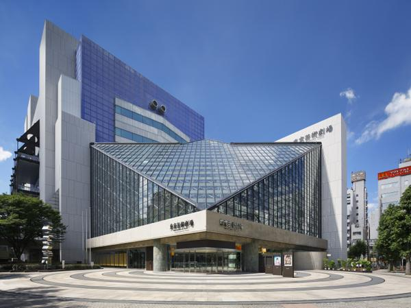

日本語
日本語
 简体中文
简体中文
Shinjuku & Ikebukuro
Among the world's stations, Shinjuku, Shibuya, and Ikebukuro rank top three in daily average users.
Shinjuku and Ikebukuro are bustling districts, convenient for shopping.
Shinjuku
Shinjuku Station is used by over 3.6 million people daily and was registered in the Guinness Book of World Records in 2007 as the station with the highest number of passengers.
There are many department stores such as Shinjuku Isetan, Shinjuku Takashimaya, NEWoMan, and LUMINE.
Tokyo Metropolitan Government Building
The twin towers of the Tokyo Metropolitan Government Building are a symbol of Shinjuku. Most parts of the building are open for free tours.
From the observation deck on the 45th floor of the first building, you can enjoy a panoramic view of Tokyo from 202 meters above ground.
It's free of charge. During the day, you can see the city of Tokyo, Tokyo Skytree, Tokyo Tower, Tokyo Bay, and sometimes even Mount Fuji. The dedicated high-speed elevator takes about 1 minute. You can enter until 10:30 PM to enjoy the night view.

Sekaido Shinjuku Main Store
"Sekaido Shinjuku Main Store" is a specialty store for frames, art supplies, and stationery, offering a wide range of popular stationery, art supplies, frames, and art materials from around the world.

Shinjuku Gyoen
Shinjuku Gyoen is a modern Western garden from the Meiji era, combining formal gardens, landscape gardens, and Japanese gardens.

Ikebukuro Station
Around Ikebukuro Station, you can find everything from electronics to furniture and cosmetics.

Sunshine Aquarium
When you come to Ikebukuro, there are plenty of shopping and dining options at Sunshine City.
Especially, "Sunshine Aquarium" is Japan's first urban high-rise aquarium. With the concept of "Sky Oasis," you can enjoy a space filled with sky, light, water, and greenery, making you feel like you're not in the middle of the city.
There is an observation deck on the top floor. The fee is about 700 yen.

Tokyo Metropolitan Theatre
If you are interested in music, theater, opera, or musicals, you should visit the Tokyo Metropolitan Theatre at least once.
